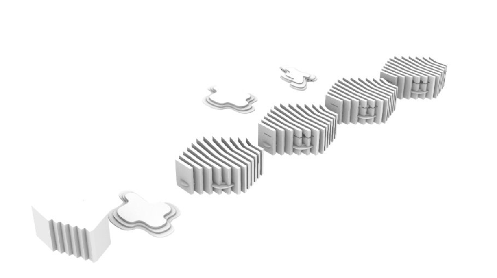

Project Name: Adaptive Environment
This project is a three-dimensional abstract study of
how communities interact with and reshape the built
environment over time. It explores how existing
architectural forms can be reused and transformed to
support changing human relationships and social
dynamics. At its core, the work examines the tension
between designed space and lived experience, questioning
how pysical structures influence-and are influenced
by-the communities that inhabit them.
